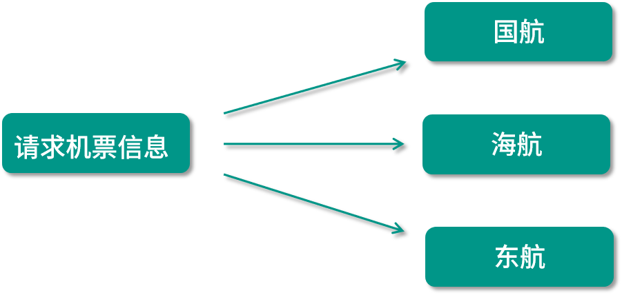
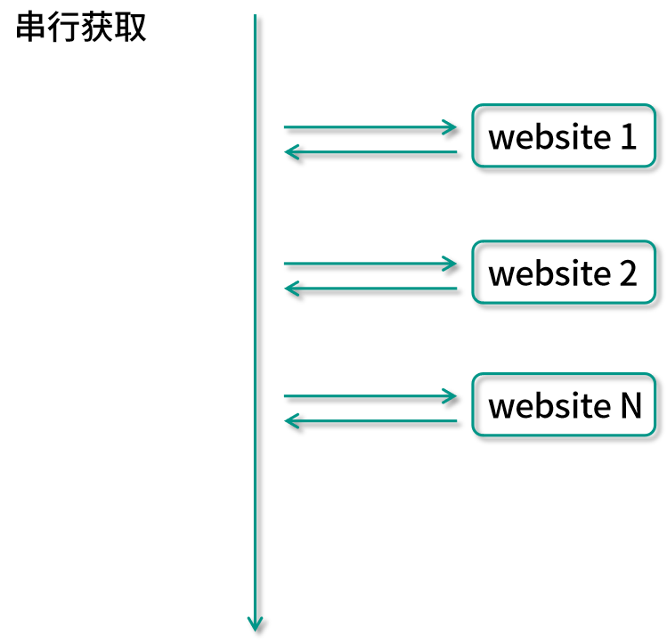
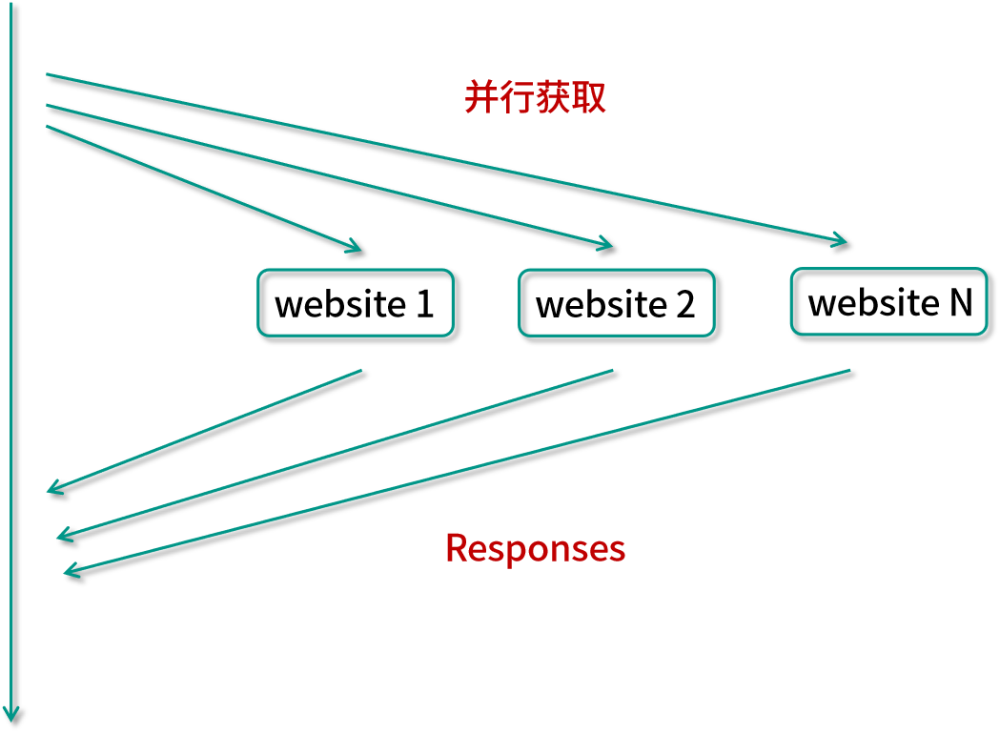
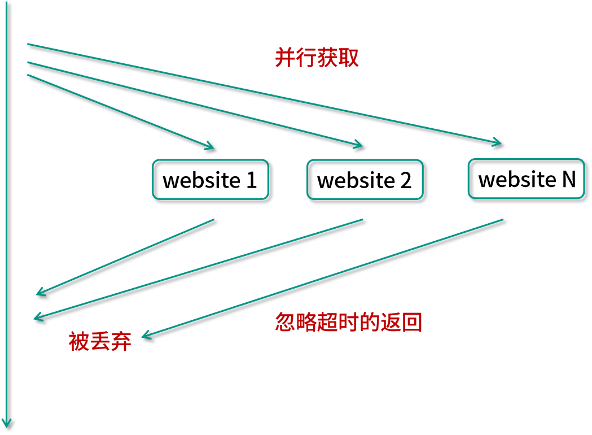

- 00 由点及面，搭建你的 Java 并发知识网.md
- 01 为何说只有 1 种实现线程的方法？.md
- 02 如何正确停止线程？为什么 volatile 标记位的停止方法是错误的？.md
- 03 线程是如何在 6 种状态之间转换的？.md
- 04 waitnotifynotifyAll 方法的使用注意事项？.md
- 05 有哪几种实现生产者消费者模式的方法？.md
- 06 一共有哪 3 类线程安全问题？.md
- 07 哪些场景需要额外注意线程安全问题？.md
- 08 为什么多线程会带来性能问题？.md
- 09 使用线程池比手动创建线程好在哪里？.md
- 10 线程池的各个参数的含义？.md
- 11 线程池有哪 4 种拒绝策略？.md
- 12 有哪 6 种常见的线程池？什么是 Java8 的 ForkJoinPool？.md
- 13 线程池常用的阻塞队列有哪些？.md
- 14 为什么不应该自动创建线程池？.md
- 15 合适的线程数量是多少？CPU 核心数和线程数的关系？.md
- 16 如何根据实际需要，定制自己的线程池？.md
- 17 如何正确关闭线程池？shutdown 和 shutdownNow 的区别？.md
- 18 线程池实现“线程复用”的原理？.md
- 19 你知道哪几种锁？分别有什么特点？.md
- 20 悲观锁和乐观锁的本质是什么？.md
- 21 如何看到 synchronized 背后的“monitor 锁”？.md
- 22 synchronized 和 Lock 孰优孰劣，如何选择？.md
- 23 Lock 有哪几个常用方法？分别有什么用？.md
- 24 讲一讲公平锁和非公平锁，为什么要“非公平”？.md
- 25 读写锁 ReadWriteLock 获取锁有哪些规则？.md
- 26 读锁应该插队吗？什么是读写锁的升降级？.md
- 27 什么是自旋锁？自旋的好处和后果是什么呢？.md
- 28 JVM 对锁进行了哪些优化？.md
- 29 HashMap 为什么是线程不安全的？.md
- 30 ConcurrentHashMap 在 Java7 和 8 有何不同？.md
- 31 为什么 Map 桶中超过 8 个才转为红黑树？.md
- 32 同样是线程安全，ConcurrentHashMap 和 Hashtable 的区别.md
- 33 CopyOnWriteArrayList 有什么特点？.md
- 34 什么是阻塞队列？.md
- 35 阻塞队列包含哪些常用的方法？add、offer、put 等方法的区别？.md
- 36 有哪几种常见的阻塞队列？.md
- 37 阻塞和非阻塞队列的并发安全原理是什么？.md
- 38 如何选择适合自己的阻塞队列？.md
- 39 原子类是如何利用 CAS 保证线程安全的？.md
- 40 AtomicInteger 在高并发下性能不好，如何解决？为什么？.md
- 41 原子类和 volatile 有什么异同？.md
- 42 AtomicInteger 和 synchronized 的异同点？.md
- 43 Java 8 中 Adder 和 Accumulator 有什么区别？.md
- 44 ThreadLocal 适合用在哪些实际生产的场景中？.md
- 45 ThreadLocal 是用来解决共享资源的多线程访问的问题吗？.md
- 46 多个 ThreadLocal 在 Thread 中的 threadlocals 里是怎么存储的？.md
- 47 内存泄漏——为何每次用完 ThreadLocal 都要调用 remove()？.md
- 48 Callable 和 Runnable 的不同？.md
- 49 Future 的主要功能是什么？.md
- 50 使用 Future 有哪些注意点？Future 产生新的线程了吗？.md
- 51 如何利用 CompletableFuture 实现“旅游平台”问题？.md
- 52 信号量能被 FixedThreadPool 替代吗？.md
- 53 CountDownLatch 是如何安排线程执行顺序的？.md
- 54 CyclicBarrier 和 CountdownLatch 有什么异同？.md
- 55 Condition、object.wait() 和 notify() 的关系？.md
- 56 讲一讲什么是 Java 内存模型？.md
- 57 什么是指令重排序？为什么要重排序？.md
- 58 Java 中的原子操作有哪些注意事项？.md
- 59 什么是“内存可见性”问题？.md
- 60 主内存和工作内存的关系？.md
- 61 什么是 happens-before 规则？.md
- 62 volatile 的作用是什么？与 synchronized 有什么异同？.md
- 63 单例模式的双重检查锁模式为什么必须加 volatile？.md
- 64 你知道什么是 CAS 吗？.md
- 65 CAS 和乐观锁的关系，什么时候会用到 CAS？.md
- 66 CAS 有什么缺点？.md
- 67 如何写一个必然死锁的例子？.md
- 68 发生死锁必须满足哪 4 个条件？.md
- 69 如何用命令行和代码定位死锁？.md
- 70 有哪些解决死锁问题的策略？.md
- 71 讲一讲经典的哲学家就餐问题.md
- 72 final 的三种用法是什么？.md
- 73 为什么加了 final 却依然无法拥有“不变性”？.md
- 74 为什么 String 被设计为是不可变的？.md
- 75 为什么需要 AQS？AQS 的作用和重要性是什么？.md
- 76 AQS 的内部原理是什么样的？.md
- 77 AQS 在 CountDownLatch 等类中的应用原理是什么？.md
- 78 一份独家的 Java 并发工具图谱.md
51 如何利用 CompletableFuture 实现“旅游平台”问题？
本课时我们主要讲解如何利用 CompletableFuture 实现旅游平台问题。
旅游平台问题
什么是旅游平台问题呢？如果想要搭建一个旅游平台，经常会有这样的需求，那就是用户想同时获取多家航空公司的航班信息。比如，从北京到上海的机票钱是多少？有很多家航空公司都有这样的航班信息，所以应该把所有航空公司的航班、票价等信息都获取到，然后再聚合。由于每个航空公司都有自己的服务器，所以分别去请求它们的服务器就可以了，比如请求国航、海航、东航等，如下图所示：

串行
一种比较原始的方式是用串行的方式来解决这个问题。

比如我们想获取价格，要先去访问国航，在这里叫作 website 1，然后再去访问海航 website 2，以此类推。当每一个请求发出去之后，等它响应回来以后，我们才能去请求下一个网站，这就是串行的方式。
这样做的效率非常低下，比如航空公司比较多，假设每个航空公司都需要 1 秒钟的话，那么用户肯定等不及，所以这种方式是不可取的。
并行
接下来我们就对刚才的思路进行改进，最主要的思路就是把串行改成并行，如下图所示：

我们可以并行地去获取这些机票信息，然后再把机票信息给聚合起来，这样的话，效率会成倍的提高。
这种并行虽然提高了效率，但也有一个缺点，那就是会“一直等到所有请求都返回”。如果有一个网站特别慢，那么你不应该被那个网站拖累，比如说某个网站打开需要二十秒，那肯定是等不了这么长时间的，所以我们需要一个功能，那就是有超时的获取。
有超时的并行获取
下面我们就来看看下面这种有超时的并行获取的情况。

在这种情况下，就属于有超时的并行获取，同样也在并行的去请求各个网站信息。但是我们规定了一个时间的超时，比如 3 秒钟，那么到 3 秒钟的时候如果都已经返回了那当然最好，把它们收集起来即可；但是如果还有些网站没能及时返回，我们就把这些请求给忽略掉，这样一来用户体验就比较好了，它最多只需要等固定的 3 秒钟就能拿到信息，虽然拿到的可能不是最全的，但是总比一直等更好。
想要实现这个目标有几种实现方案，我们一个一个的来看看。
线程池的实现
第一个实现方案是用线程池，我们来看一下代码。
public class ThreadPoolDemo {
ExecutorService threadPool = Executors.newFixedThreadPool(3);
public static void main(String[] args) throws InterruptedException {
ThreadPoolDemo threadPoolDemo = new ThreadPoolDemo();
System.out.println(threadPoolDemo.getPrices());
}
private Set<Integer> getPrices() throws InterruptedException {
Set<Integer> prices = Collections.synchronizedSet(new HashSet<Integer>());
threadPool.submit(new Task(123, prices));
threadPool.submit(new Task(456, prices));
threadPool.submit(new Task(789, prices));
Thread.sleep(3000);
return prices;
}
private class Task implements Runnable {
Integer productId;
Set<Integer> prices;
public Task(Integer productId, Set<Integer> prices) {
this.productId = productId;
this.prices = prices;
}
@Override
public void run() {
int price=0;
try {
Thread.sleep((long) (Math.random() * 4000));
price= (int) (Math.random() * 4000);
} catch (InterruptedException e) {
e.printStackTrace();
}
prices.add(price);
}
}
}
在代码中，新建了一个线程安全的 Set，它是用来存储各个价格信息的，把它命名为 Prices，然后往线程池中去放任务。线程池是在类的最开始时创建的，是一个固定 3 线程的线程池。而这个任务在下方的 Task 类中进行了描述，在这个 Task 中我们看到有 run 方法，在该方法里面，我们用一个随机的时间去模拟各个航空网站的响应时间，然后再去返回一个随机的价格来表示票价，最后把这个票价放到 Set 中。这就是我们 run 方法所做的事情。
再回到 getPrices 函数中，我们新建了三个任务，productId 分别是 123、456、789，这里的 productId 并不重要，因为我们返回的价格是随机的，为了实现超时等待的功能，在这里调用了 Thread 的 sleep 方法来休眠 3 秒钟，这样做的话，它就会在这里等待 3 秒，之后直接返回 prices。
此时，如果前面响应速度快的话，prices 里面最多会有三个值，但是如果每一个响应时间都很慢，那么可能 prices 里面一个值都没有。不论你有多少个，它都会在休眠结束之后，也就是执行完 Thread 的 sleep 之后直接把 prices 返回，并且最终在 main 函数中把这个结果给打印出来。
我们来看一下可能的执行结果，一种可能性就是有 3 个值，即 [3815, 3609, 3819]（数字是随机的）；有可能是 1 个 [3496]、或 2 个 [1701, 2730]，如果每一个响应速度都特别慢，可能一个值都没有。
这就是用线程池去实现的最基础的方案。
CountDownLatch
在这里会有一个优化的空间，比如说网络特别好时，每个航空公司响应速度都特别快，你根本不需要等三秒，有的航空公司可能几百毫秒就返回了，那么我们也不应该让用户等 3 秒。所以需要进行一下这样的改进，看下面这段代码：
public class CountDownLatchDemo {
ExecutorService threadPool = Executors.newFixedThreadPool(3);
public static void main(String[] args) throws InterruptedException {
CountDownLatchDemo countDownLatchDemo = new CountDownLatchDemo();
System.out.println(countDownLatchDemo.getPrices());
}
private Set<Integer> getPrices() throws InterruptedException {
Set<Integer> prices = Collections.synchronizedSet(new HashSet<Integer>());
CountDownLatch countDownLatch = new CountDownLatch(3);
threadPool.submit(new Task(123, prices, countDownLatch));
threadPool.submit(new Task(456, prices, countDownLatch));
threadPool.submit(new Task(789, prices, countDownLatch));
countDownLatch.await(3, TimeUnit.SECONDS);
return prices;
}
private class Task implements Runnable {
Integer productId;
Set<Integer> prices;
CountDownLatch countDownLatch;
public Task(Integer productId, Set<Integer> prices,
CountDownLatch countDownLatch) {
this.productId = productId;
this.prices = prices;
this.countDownLatch = countDownLatch;
}
@Override
public void run() {
int price = 0;
try {
Thread.sleep((long) (Math.random() * 4000));
price = (int) (Math.random() * 4000);
} catch (InterruptedException e) {
e.printStackTrace();
}
prices.add(price);
countDownLatch.countDown();
}
}
}
这段代码使用 CountDownLatch 实现了这个功能，整体思路和之前是一致的，不同点在于我们新增了一个 CountDownLatch，并且把它传入到了 Task 中。在 Task 中，获取完机票信息并且把它添加到 Set 之后，会调用 countDown 方法，相当于把计数减 1。
这样一来，在执行 countDownLatch.await(3, TimeUnit.SECONDS) 这个函数进行等待时，如果三个任务都非常快速地执行完毕了，那么三个线程都已经执行了 countDown 方法，那么这个 await 方法就会立刻返回，不需要傻等到 3 秒钟。
如果有一个请求特别慢，相当于有一个线程没有执行 countDown 方法，来不及在 3 秒钟之内执行完毕，那么这个带超时参数的 await 方法也会在 3 秒钟到了以后，及时地放弃这一次等待，于是就把 prices 给返回了。所以这样一来，我们就利用 CountDownLatch 实现了这个需求，也就是说我们最多等 3 秒钟，但如果在 3 秒之内全都返回了，我们也可以快速地去返回，不会傻等，提高了效率。
CompletableFuture
我们再来看一下用 CompletableFuture 来实现这个功能的用法，代码如下所示：
public class CompletableFutureDemo {
public static void main(String[] args)
throws Exception {
CompletableFutureDemo completableFutureDemo = new CompletableFutureDemo();
System.out.println(completableFutureDemo.getPrices());
}
private Set<Integer> getPrices() {
Set<Integer> prices = Collections.synchronizedSet(new HashSet<Integer>());
CompletableFuture<Void> task1 = CompletableFuture.runAsync(new Task(123, prices));
CompletableFuture<Void> task2 = CompletableFuture.runAsync(new Task(456, prices));
CompletableFuture<Void> task3 = CompletableFuture.runAsync(new Task(789, prices));
CompletableFuture<Void> allTasks = CompletableFuture.allOf(task1, task2, task3);
try {
allTasks.get(3, TimeUnit.SECONDS);
} catch (InterruptedException e) {
} catch (ExecutionException e) {
} catch (TimeoutException e) {
}
return prices;
}
private class Task implements Runnable {
Integer productId;
Set<Integer> prices;
public Task(Integer productId, Set<Integer> prices) {
this.productId = productId;
this.prices = prices;
}
@Override
public void run() {
int price = 0;
try {
Thread.sleep((long) (Math.random() * 4000));
price = (int) (Math.random() * 4000);
} catch (InterruptedException e) {
e.printStackTrace();
}
prices.add(price);
}
}
}
这里我们不再使用线程池了，我们看到 getPrices 方法，在这个方法中，我们用了 CompletableFuture 的 runAsync 方法，这个方法会异步的去执行任务。
我们有三个任务，并且在执行这个代码之后会分别返回一个 CompletableFuture 对象，我们把它们命名为 task 1、task 2、task 3，然后执行 CompletableFuture 的 allOf 方法，并且把 task 1、task 2、task 3 传入。这个方法的作用是把多个 task 汇总，然后可以根据需要去获取到传入参数的这些 task 的返回结果，或者等待它们都执行完毕等。我们就把这个返回值叫作 allTasks，并且在下面调用它的带超时时间的 get 方法，同时传入 3 秒钟的超时参数。
这样一来它的效果就是，如果在 3 秒钟之内这 3 个任务都可以顺利返回，也就是这个任务包括的那三个任务，每一个都执行完毕的话，则这个 get 方法就可以及时正常返回，并且往下执行，相当于执行到 return prices。在下面的这个 Task 的 run 方法中，该方法如果执行完毕的话，对于 CompletableFuture 而言就意味着这个任务结束，它是以这个作为标记来判断任务是不是执行完毕的。但是如果有某一个任务没能来得及在 3 秒钟之内返回，那么这个带超时参数的 get 方法便会抛出 TimeoutException 异常，同样会被我们给 catch 住。这样一来它就实现了这样的效果：会尝试等待所有的任务完成，但是最多只会等 3 秒钟，在此之间，如及时完成则及时返回。那么所以我们利用 CompletableFuture，同样也可以解决旅游平台的问题。它的运行结果也和之前是一样的，有多种可能性。
最后做一下总结。在本课时中，我们先给出了一个旅游平台问题，它需要获取各航空公司的机票信息，随后进行了代码演进，从串行到并行，再到有超时的并行，最后到不仅有超时的并行，而且如果大家速度都很快，那么也不需要一直等到超时时间到，我们进行了这样的一步一步的迭代。
当然除了这几种实现方案之外，还会有其他的实现方案，你能想到哪些实现方案呢？不妨在下方留言告诉我，谢谢。
© 2019 - 2023 Liangliang Lee. Powered by gin and hexo-theme-book.